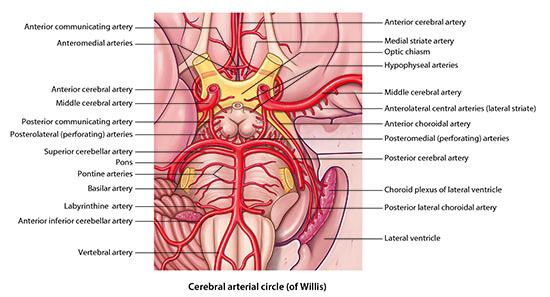
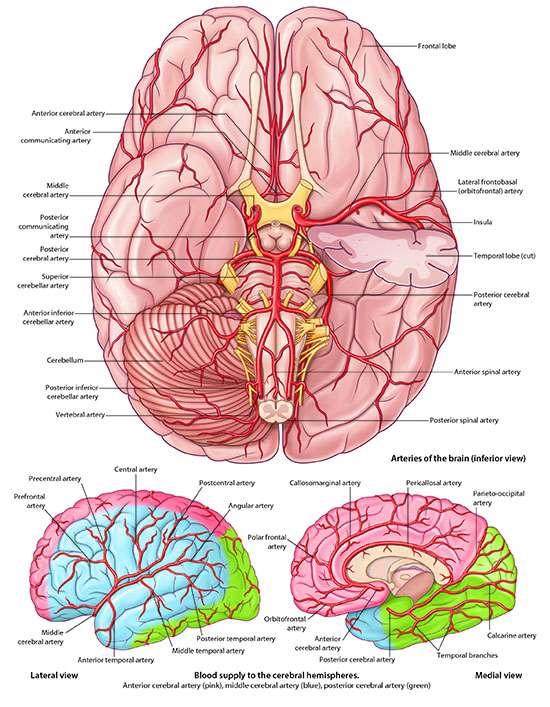

Neurology Lab 1 - Module 1 - Blood Supply to the Brain: Page 1 of 5
×

|  |
| Tap on image to enlarge |
| Add the posterior cerebral arteries. | |
| Add the middle cerebral arteries. | |
| Add the anterior cerebral arteries. |
| Since the arterial vessels of the brain are so small, only the larger vessels can be seen on our cadaver. |
|  |
| Tap on image to enlarge |
| Using the diagram, trace the blood flow to each of the lobes supplied by the major arteries listed above. |
| Using the diagram, predict the consequences of injury to the following cerebral arteries: |